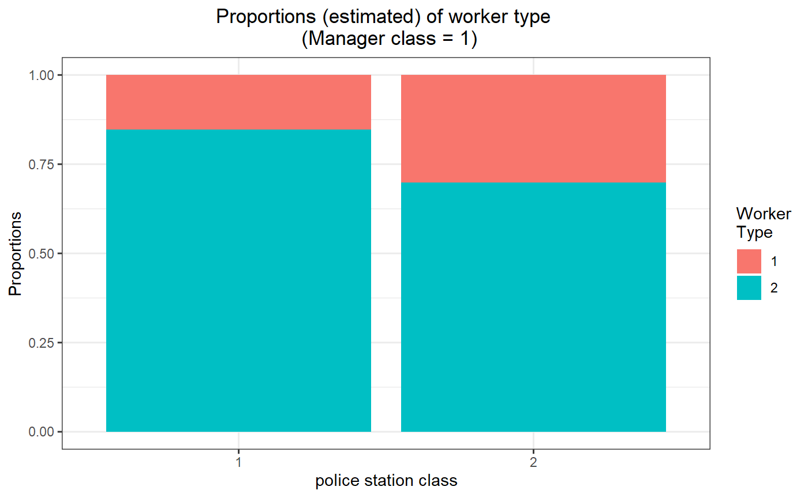
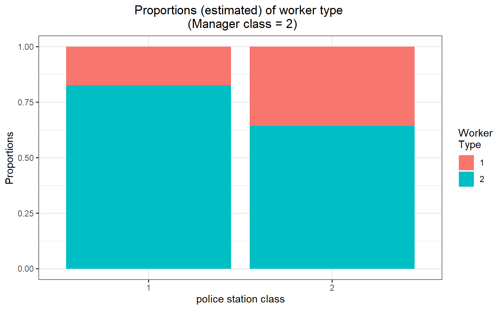
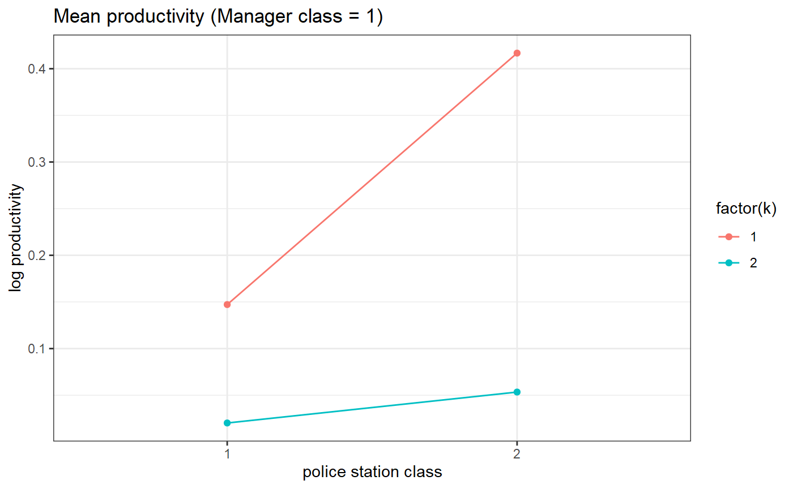
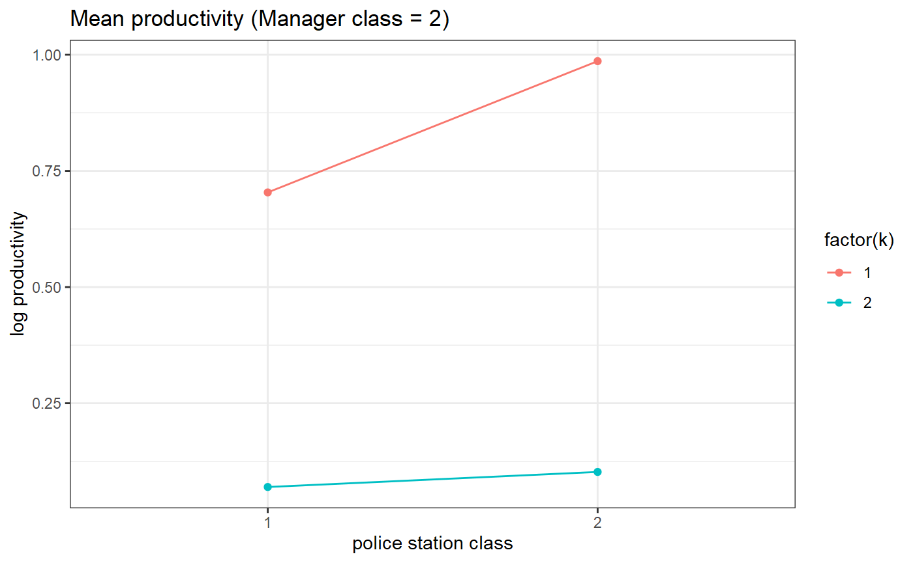

vignettes/acblm_example.Rmd
acblm_example.RmdSimulating and estimating the mixture model
require(acblm)
require(knitr)
require(kableExtra)
options(knitr.table.format = "html")
knitr::opts_chunk$set(dev = "png", dev.args = list(type = "cairo-png"))In time period \(t\), the distribution which depends on the type \(\alpha_i\) (worker in paper), class \(m_{it}\) (manager in paper) and the class \(k_{it}\) (firm class in paper).
\[Pr[Y_{it} \leq y|m_{it}=m,k_{it}=k,\alpha_i=\alpha]=F_{mk\alpha}(y)\]
set.seed(3236)
# three sided model
model_test = m2.mixt.new(nk=2,nf=2,nb=2)
# model initializer for beta tests
model <- ModelInitializer()
# assign the means of distributions system has simple complementarity
model_test$A1[1,,]=model$A1[1,1:2,]
model_test$A1[2,,]=model$A1[1,3:4,]
# assign the variance of distribution ( small: will help in convergence on desktop)
model_test$S1[] = 0.1
model_test$S2[] = 0.1
# Simple case when distribution at T=2 is same to T=1
model_test$A2 = model_test$A1
model_test$NNm[,,,] = 1000
model_test$pk1[,,]=0.5
model_test$pk0[,,]=0.5
pk1 = rdirichlet(2*2*2*2,rep(1,2))
dim(pk1) = c(2*2, 2*2 , 2)
model_test$pk1 = pk1
pk0 = rdirichlet(2*2,rep(1,2))
dim(pk0) = c(2,2,2)
model_test$pk0 = pk0
# simulate the data
test_data <- Simulate.data.threeSided(model_test)
ctrl <- set.solver.controls(model_test, # Model
n_startValues=1, # number of starting values
stayers_sample=0.1) # if want to subsample the stayers data
ad_employee_em <- threeSided.Clustering(test_data) # simulated data ## INFO [2021-05-18 02:06:08] here i am
## INFO [2021-05-18 02:06:08] generating measures for firms
## INFO [2021-05-18 02:06:08] processing 6000 unique id's
## INFO [2021-05-18 02:06:08] computing measures...
## INFO [2021-05-18 02:06:08] computing weights...
## INFO [2021-05-18 02:06:09] clustering T=51.002687, Nw=20 , measure=ecdf
## INFO [2021-05-18 02:06:09] running weigthed kmeans step=250 total=1000
## INFO [2021-05-18 02:06:09] nobs=6000 nmeasures=20
## INFO [2021-05-18 02:06:09] running weighted k-means [25%] completed
## INFO [2021-05-18 02:06:10] running weighted k-means [50%] completed <<<<<
## INFO [2021-05-18 02:06:11] running weighted k-means [75%] completed <<<<<
## INFO [2021-05-18 02:06:11] running weighted k-means [100%] completed <<<<<
## INFO [2021-05-18 02:06:11] k=2 WSS=945.565383 nstart=1000 ids=6000
## INFO [2021-05-18 02:06:12] generating measures for managers
## INFO [2021-05-18 02:06:12] processing 6000 unique id's
## INFO [2021-05-18 02:06:12] computing measures...
## INFO [2021-05-18 02:06:12] computing weights...
## INFO [2021-05-18 02:06:12] clustering T=51.008960, Nw=20 , measure=ecdf
## INFO [2021-05-18 02:06:12] running weigthed kmeans step=250 total=1000
## INFO [2021-05-18 02:06:12] nobs=6000 nmeasures=20
## INFO [2021-05-18 02:06:13] running weighted k-means [25%] completed
## INFO [2021-05-18 02:06:13] running weighted k-means [50%] completed <<<<<
## INFO [2021-05-18 02:06:14] running weighted k-means [75%] completed <<<<<
## INFO [2021-05-18 02:06:15] running weighted k-means [100%] completed <<<<<
## INFO [2021-05-18 02:06:15] k=2 WSS=945.607584 nstart=1000 ids=6000
my_model_test_cluster <- estimation.threeSided.model(model_test, # model
ad_employee_em, # data with step 1 estimation results
ctrl) # control parametrs for solver ## Warning: 'cBind' is deprecated.
## Since R version 3.2.0, base's cbind() should work fine with S4 objects## Warning: 'rBind' is deprecated.
## Since R version 3.2.0, base's rbind() should work fine with S4 objects## INFO [2021-05-18 02:06:19] [ 29][para0][final] lik=-817.8422 dlik=5.8178e-08 liks=-8.1752e+02 likm=0.0000e+00
## INFO [2021-05-18 02:06:19] res para : value at model start
## INFO [2021-05-18 02:06:19] starting repetitions with 1 nodes
## INFO [2021-05-18 02:06:21] [ 37][paraf (1/1)][final] lik=-95979.7050 dlik=8.9607e-08 liks=-9.5978e+04 likm=0.0000e+00
## INFO [2021-05-18 02:06:26] [ 62][para1 (1/1)][final] lik=-138.3642 dlik=9.8202e-08 liks=-1.3805e+02 likm=0.0000e+00
## INFO [2021-05-18 02:06:27] [ 22][move1 (1/1)][final] lik=11630.2041 dlik=7.2779e-08 liks=1.1631e+04 likm=0.0000e+00
## INFO [2021-05-18 02:06:27] done with reptitions 1/1
## INFO [2021-05-18 02:06:28] drawing 0.100000 from the stayers
## INFO [2021-05-18 02:06:28] selecting best model
## INFO [2021-05-18 02:06:28] print pk0,nf*nx,nk
## [,1] [,2]
## [1,] 0.7773345 0.2226655
## [2,] 0.8004161 0.1995839
## [3,] 0.2289786 0.7710214
## [4,] 0.4192576 0.5807424
## , , 1
##
## [,1] [,2] [,3] [,4]
## [1,] 0.1521758 0.3009681 0.1736538 0.3569221
##
## , , 2
##
## [,1] [,2] [,3] [,4]
## [1,] 0.8478242 0.6990319 0.8263462 0.6430779
##
## INFO [2021-05-18 02:06:28] drawing here
## cor_kl cor_km cor_lm cov_kl cov_km cov_lm var_k var_l var_m rsq
## 1 0.183 0.0464 0.0104 0.0574 0.0282 0.0012 0.7599 0.0324 0.1208 0.7002
# Estimation results for mean
my_model_test_cluster$model$A1[1,,]## [,1] [,2]
## [1,] 0.1471967 0.02025321
## [2,] 0.4167360 0.05339750
## [3,] 0.7037331 0.06984640
## [4,] 0.9861827 0.10224342
# for manager class 1
threeSided.proportion.plot(my_model_test_cluster, m=1)
# for manager class 2
threeSided.proportion.plot(my_model_test_cluster, m=2) # Estimated parameters (means)
# for manager class 1
threeSided.means.plot(my_model_test_cluster, m=1)
# for manager class 2
threeSided.means.plot(my_model_test_cluster, m=2)